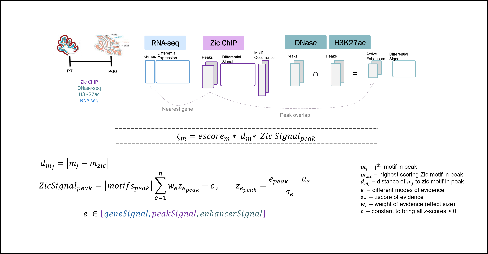
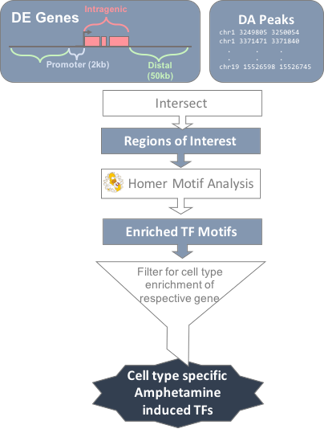
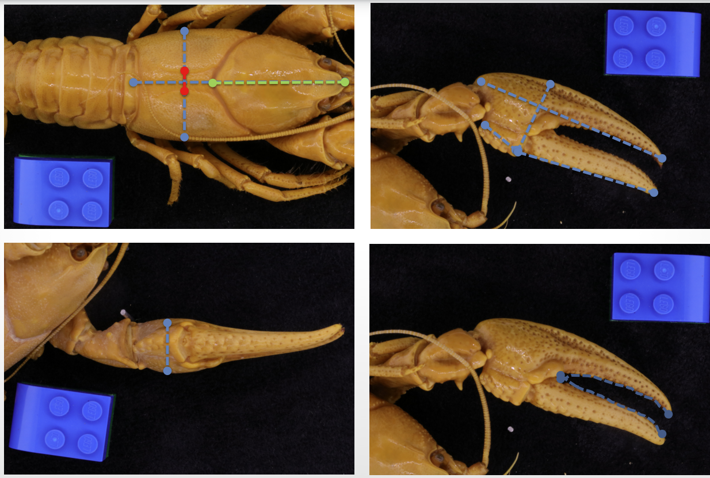

NC Environmental Public Health Tracking
Transcription is driven by the sequence-specific DNA binding of transcription factors (TFs) at gene regulatory elements. TF binding can be stimulus-driven, altered by genomic context, and influenced by interactions with other collaborating or competitive factors. We have been addressing this challenge by studying the binding of the Zic family of TFs in cerebellar granule neurons (CGNs) which are required for cerebellar development. However they change their binding profile over time which are associated with both activation and repression of transcription. We are developing a quantitative model that will leverage additional information from changes in gene expression and chromatin state between these developmental stages to rank putative TF binding sites by activity as an improved way to search for collaborating factors. The goal is to reveal a mechanism by which a single TF can target different genomic loci at different stages of development to orchestrate cellular maturation over developmental time.
NC Environmental Public Health Tracking

Project managed a DukeData+ program which introduces undergraduates to explore data. Much of the health of the general population is determined by several invisible factors. The Data+ project team was tasked with piloting an environmental public health tracking tool for North Carolina to allow users to understand and visualize connections between social determinants, health measures (such as asthma rates and heart attacks), and environmental measures (such as PM 2.5 concentration).
Analyzing PV and SST Interneurons
Used various bioinformatic tools to assess ATAC-seq and RNA-seq data from Somatostatin and Parvilbumin Interneurons in the Nucleus Accumbens. This included differential gene expression analysis of the RNA data, differential peak analysis of the ATAC data, and motif enrichemnt of the DA peaks in reference to the DE genes. This revealed serveral transcription factors that were important in response to amphetamine in PV and SST cells.
Morphometric Crayfish species dilineation
Crayfishes are considered one of the most imperiled groups of organisms in the U.S. Effective conservation of these organisms is predicated on reliable identification of species which is a substantial challenge faced in crayfish. Confident identification is often based on adult reproductive-form males, the presence of which is highly dependent on time of year. Our primary objective is to extend and automate a morphometric technique, i.e., landmark analysis, to aid in reliable identification of crayfish species regardless of sex age and reproductive stage and which characters vary across space and environment irrespective of taxonomic group.